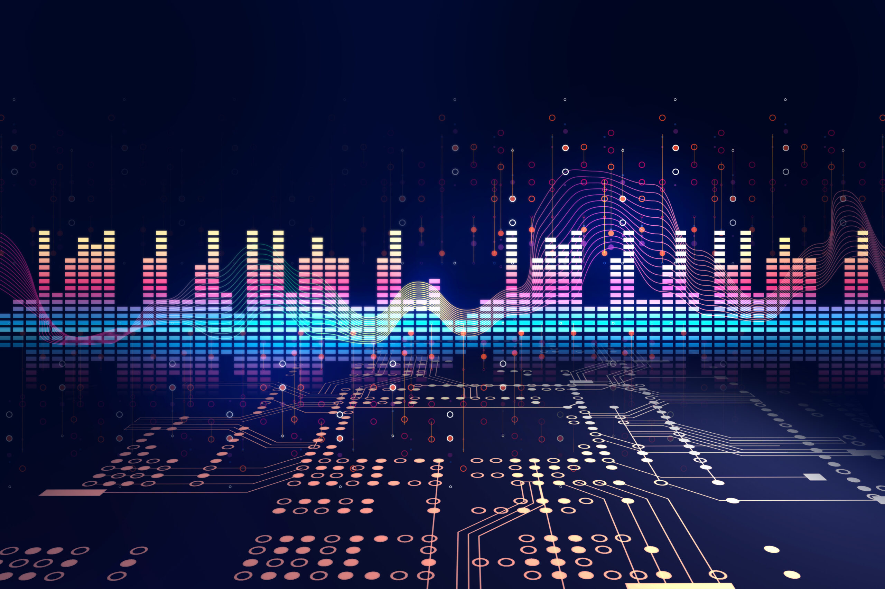
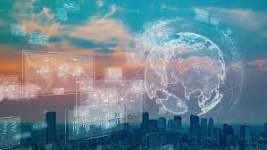

Álbum 1 - Neon Dreams
Este álbum apresenta uma fusão única de sintetizadores vintage e batidas modernas. Algumas faixas notáveis incluem "Cidade Neon" e "Pulso Eletrônico".

Álbum 2 - Cyber Circuit
"Cyber Circuit" leva os ouvintes a uma jornada através de paisagens sonoras digitais. Destaque para "Cibernética" e "Circuito Infinito".

Álbum 3 - Future Fusion
Este álbum inova com a fusão de elementos eletrônicos e orgânicos. Ouça "Fusão Futurista" e "Sons do Amanhã".